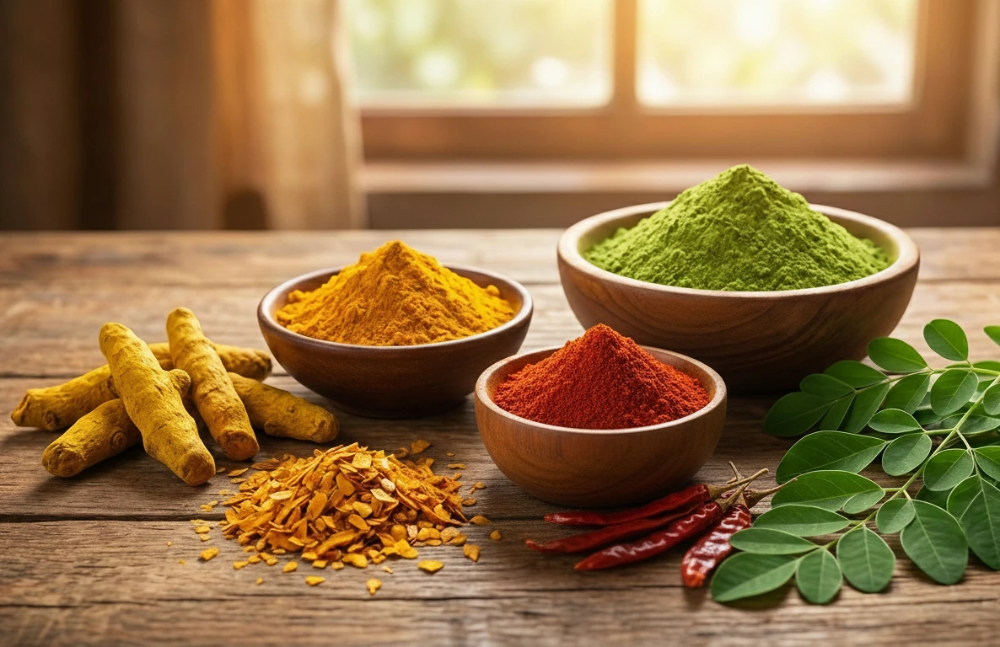

About GAAP Spices & Super Food
Our Commitment to Excellence
GAAP Spices & Super Food LLP aspires to be a leading name in the global spice & superfood market, dedicated to bringing the finest and most authentic Indian flavors to international tables. With decades of experience in the corporate world, we pride ourselves on building deep-rooted relationships with local farms & several government bodies dedicated to promoting local farmers.
Our mission is to ensure that every pinch of spice & food product we export maintains its natural aroma, color, and nutritional value. We combine traditional knowledge with modern quality control to meet the highest international standards.
- ✅ 100% Pure & Natural
- ✅ Direct from Farms
- ✅ Certified Quality Standards

Our History
Leveraging the years of corporate experience of its founders, GAAP Spices & Super Food LLP, was founded on the principle of purity, with the noble intent to bridge the gap between local farmers and the global culinary market maintaining highest quality standards. Aiming to be the most reliable exporters, serving clients across the globe with a portfolio of premium Indian spices & superfood products.